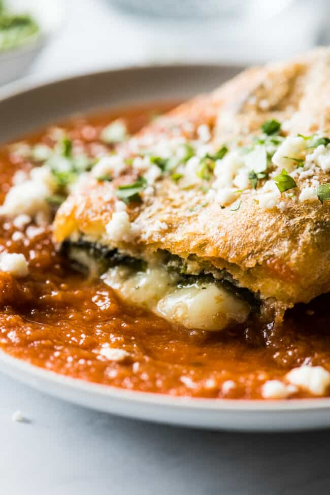

Chile Rellenos

Not much to say other than follow this recipe and have you mind blown by these Chile Rellenos
Ingredients:
For the chile rellenos
- 6 large poblano peppers
- 8 ounces of Monterey Jack Cheese, cut into long strips/sticks/or use shredded cheese
- 4 cups oil, for frying
- 3 large eggs
- 1/2 cup all-purpose flour
- 1/2 teaspoon fine salt
For the salsa roja
- 6 roma tomatoes, quartered
- 81/2 small onion, halved (yellow or white)
- 3 cloves garlic
- 1 jalapeno
- 5 sprigs of cilantro
- 1 teaspoon kosher salt, salt to taste
- 1 teaspoon olive oil, use some quality olive oil please
Steps:
For the chile rellenos
- Roast the peppers: Line a large baking sheet with aluminum foil and place poblano peppers on top. Set your oven rack directly underneath broiler and turn the broiler on.
- Broil polblanos for 5 minutes, or until the skin is blakened and blistered. Carefully flip them over and broil for another 5 minutes, or until the skin is blakened and blistered
- Remove them from the oven and loosely cover the baking sheet with aluminum foil or plastic wrap to keep in some of the heat and help them steam. Let them sit for 5 minutes.
- Peel the peppers: Peel and rub off as much of the loose skin on the peppers as possible. It doesn't have to be perfect, just as much as you can.
- Cut a small slit down the middle of the peppers with a knife. (If you don't want the peppers too spicy, you can remove some of the seeds. I like to leave them in as poblanos aren't typically super spicy to me, but that's personal preference.)
- Stuff the peppers: Carefully stuff the peppers with the cheese. Some of the peppers will be extra fragile because of the roasting process and may tear, that's okay. Just do the best you can.
- Gently close the opening of the peppers and secure it shut with 1-3 toothpicks. Use as many as you need to ensure that the cheese won't ooze out during the frying process. Set aside.
- Prepare for frying Heat the oil frying oil in a large saucepan or deep skillet over medium-high heat. Line a baking sheet with paper towels and set aside. While oil is heating up, prepare the batter.
- Make the batter: Separate the egg whites from the yolks into two separate bowls, the whites into a large mixing bowl and the yolks into a small bowl. Using an electric hand mixer, beat the egg whites until stiff peaks form.
- While continuing to beat the egg whites on low, add in the egg yolks one at a time until all of them are fully mixed in. The batter should be light, fluffy and smooth.
- Coat the peppers with batter: Place the flour and salt into a separate shallow bowl or plate. Mix together to combine. Gently roll the stuffed peppers in the flour mixture, then give them a gentle tap to remove any excess. Then dip them in the egg batter and gently place them in the hot frying oil.
- Fry the chile rellenos: Fry the peppers for 3-5 minutes per side, until the batter is golden brown and crispy. Try not to overcrowd the peppers in the pan, I usually fry 2 at a time depending on the pan I'm using.
- Transfer the peppers to the lined baking sheet to drain off any excess oil.
- Serve: Immediately serve chile rellenos on a plate with some salsa, freshly chopped cilantro and some cotija cheese. (Don't forget to remove the toothpicks when you first cut into the peppers! You can try to remove them before serving onto plates, but I find it easier to remove them when you first cut into them.)
For the salsa roja
- Add tomatoes, onion, jalapeno,cilantro and salt to a blender. Pure until smooth.
- Heat olive oil in a small saucepan over medium-high heat. Add blended salsa and bring to a boil.
- Reduce heat to low and simmer, stirring occasionally for 8 minutes. Remove from heat, taste and season with more salt if desired.